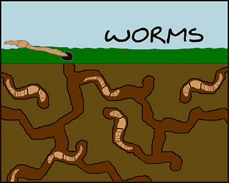

|

|
First Graders at Museum Magnet School are exploring worms. |
Ask questions.
|
This project was developed by Beth Flatten, Ann Naill and Krista Ottino for their 1st grade students at the Museum Magnet School in St Paul, MN.
Worms / Museum Magnet School